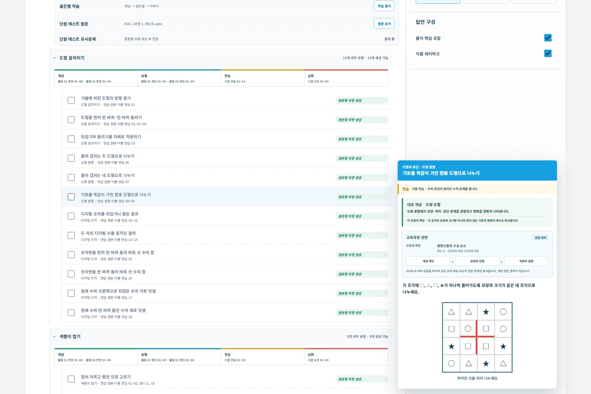
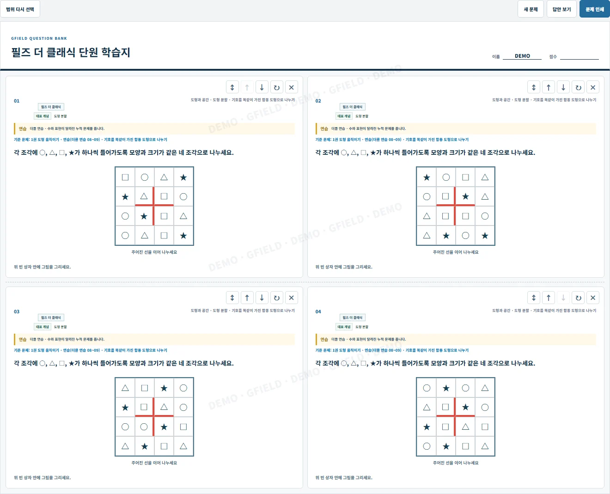

그리기 문제를 고르기 문제로 바꾸지 않고, 세로셈·도형·관계 그림의 풀이 동작을 그대로 유지합니다.

CONCEPT · DIAGNOSIS · CLINIC
필즈 더 클래식
필즈 더 클래식
사고력 문제은행
몇 문제를 풀고 끝내면 사고 과정은 금방 흐려집니다. 개념을 확인하고, 현재 수준을 진단한 뒤, 부족한 유형을 알 때까지 다시 처방합니다.
ONE LEARNING LOOP
알 때까지 이어지는 네 단계
문제를 더 많이 푸는 것보다, 어디에서 막혔는지 알고 같은 사고 원리를 다시 연결하는 데 집중합니다.
- 01개념
대표 개념과 풀이 발판으로 생각의 출발점을 잡습니다.
- 02진단
시험지와 세부 유형을 기준으로 현재 이해 수준을 확인합니다.
- 03레벨업
같은 원리를 쉬움·실제 출제·심화 수준으로 확장합니다.
- 04클리닉
틀린 문항의 유형을 다시 처방하고 이해할 때까지 재확인합니다.

BUILT FROM THE REAL WORK
교재와 시험에서 시작해
교재와 시험에서 시작해
다시 풀 수 있는 문제로
단원 이름만 붙인 문제가 아닙니다. 시험지와 교재 문항을 대단원·소단원·세부 유형으로 연결하고, 원본의 풀이 구조를 유지한 유사문제를 구성합니다.
- 선택
- 시험지별 · 교재 단원별 · 유형별
- 조절
- 원본보다 쉽게 · 같게 · 어렵게
- 확인
- 승인된 정답 · 풀이 핵심 · 약점 유형
- 출력
- 학생별 워터마크 · 문제지와 답안 인쇄
WHY IT STAYS
정답보다 사고 과정을 남깁니다
생성기가 낸 답을 그대로 믿지 않고, 가능한 유형은 독립 계산과 전수 탐색으로 유일답을 확인합니다.
점수만 보여주지 않고 문항의 세부 유형과 대표 개념을 연결해 다음 학습 범위를 정합니다.
NEXT QUESTION, SAME THINKING
내 문제은행 열기
한 번 맞히는 데서 끝내지 않습니다.
개념을 알고, 진단하고, 다시 풀어 스스로 설명할 수 있을 때까지 이어갑니다.